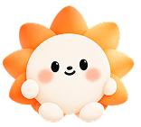
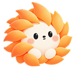
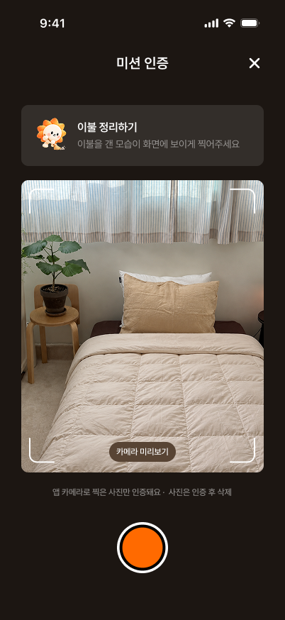
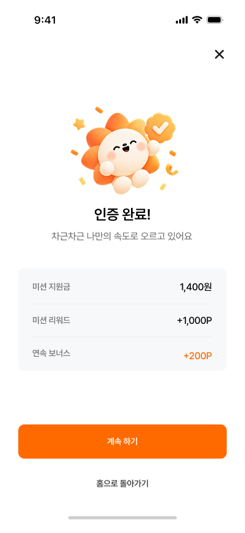
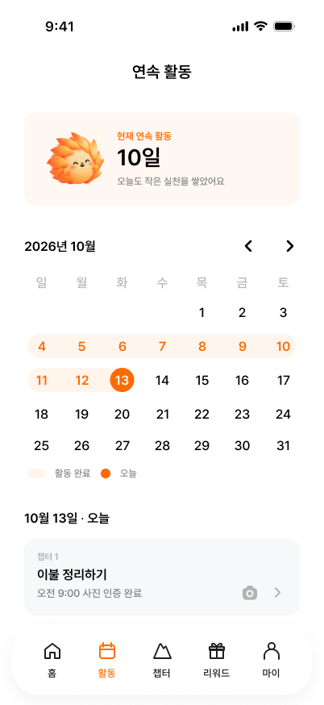
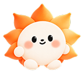

01 · 혼자 보내는 시간
혼자 보내는 시간이 조금씩 길어졌어요
어느덧 방 안에서 홀로 보내는 시간이 하루 여섯 시간을 넘어서고 있어요. 누군가를 만나고 이야기를 나누던 일상은 아득해지고, 적막한 방안을 채우는 건 오롯이 혼자만의 깊은 정적뿐입니다.

“방 안에서 시작된 이야기”
특별한 일이 있었던 건 아니에요. 일을 잠시 쉬었고, 그 쉼이 조금 길어졌을 뿐이에요. 그런데 그사이 하루의 모양이 조금씩 바뀌었습니다.
스크롤하면 이야기가 한 장씩 이어져요
01 · 혼자 보내는 시간
어느덧 방 안에서 홀로 보내는 시간이 하루 여섯 시간을 넘어서고 있어요. 누군가를 만나고 이야기를 나누던 일상은 아득해지고, 적막한 방안을 채우는 건 오롯이 혼자만의 깊은 정적뿐입니다.
바쁘게 흘러가는 도시 속, 멀리서 보면 모두 비슷해 보이는 일상이지만 돋보기로 가까이 들여다보면 그 속에 숨어 웅크리고 있는 오르미들이 있어요.
돋보기를 움직여 도시를 들여다보세요
10명의 청년 중 2명은 쉬었음을 경험했어요.
겉으로는 잘 드러나지 않지만, 이들 중 일부는 사람과의 관계를 잠시 끊고 집 밖으로 나가는 것조차 어려워하고 있습니다. 단순히 일자리를 구하는 문제 이전에, 일상의 리듬과 마음의 관계가 함께 약해졌기 때문이에요.
겉으로 보이지 않는 이 작은 웅크림을 이제 우리가 먼저 들여다보아야 할 때입니다.
아니요.
하지만 모두가 같은 곳에서 시작하지 않습니다.
직장 경험이나 구직 계획이 있는 도치들은 직무 탐색·재취업 코칭으로 바로 문을 열고 나가요.
하지만 어떤 도치에게는 그 문까지 가는 길이 너무 멀어요. 심리·관계 회복 단계가 먼저 필요해요.
관계부처 합동, 「청년층 노동시장 유입 촉진방안」(2023) · 인천시 ‘쉬었음 청년’ 정책 연구(2026)


고립·은둔 청년은 변화 의지가 있지만, 기존 지원이 요구하는 ‘대면 접촉’과 ‘구직’ 이전에 혼자서 시작할 수 있는 작은 행동의 경로가 없어 첫걸음을 떼지 못하고 있습니다.
검사가 아니에요. 지금의 상태에 맞는 첫 번째 움직임을 함께 찾아보는 시간이에요.

줄을 아래로 당겨 보세요
오늘 창문을 여는 것.작은 움직임도 변화입니다.
하루 1개 미션. 사진이나 위치처럼 미션에 맞는 방식으로 인증해요.
인증하면 바로 리워드를 받고, 연속 수행 기록이 쌓여요.
숨고르기 → 둘러보기 → 마주하기 → 도전하기. 네 개의 챕터를 한 계단씩 올라요.
하루하루의 작은 실천이 달력에 이어져요. 연속 활동이 쌓일수록 웅크린 오르미의 가시가 햇살처럼 펼쳐져요.




계속할수록 오르미가 변해요. 연속 활동 일수를 움직여 보세요.

연속 활동